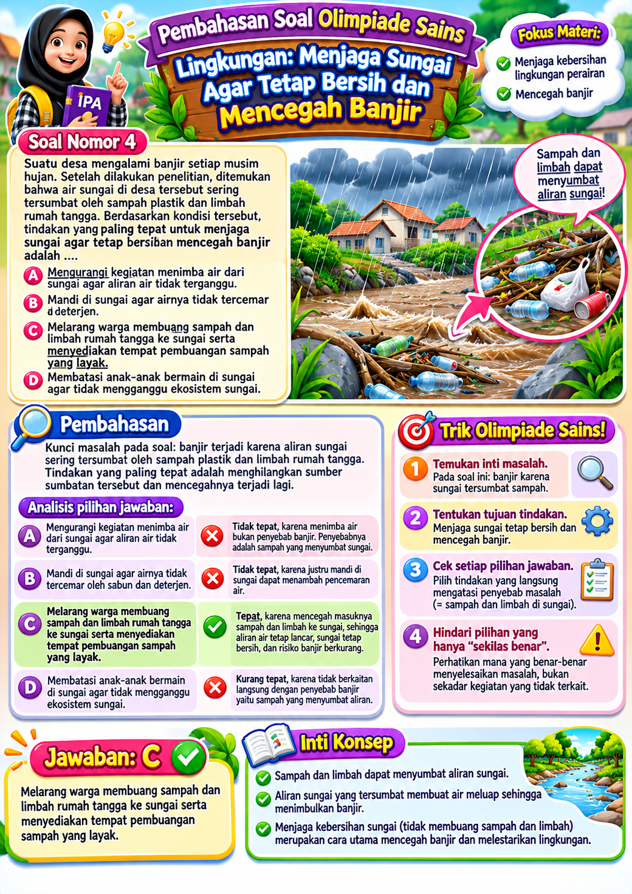

🌊 Pembahasan Soal 04 — Sungai Bersih, Desa Bebas Banjir
Belajar • Berpikir • Bereksplorasi • Berprestasi
🖼️ Grafis Pembahasan

📝 Soal Nomor 4
Suatu desa mengalami banjir setiap musim hujan. Setelah dilakukan penelitian, ditemukan bahwa air sungai di desa tersebut sering tersumbat oleh sampah plastik dan limbah rumah tangga. Berdasarkan kondisi tersebut, tindakan yang paling tepat untuk menjaga sungai agar tetap bersih dan mencegah banjir adalah ....
- Mengurangi kegiatan menimba air dari sungai agar aliran air tidak terganggu.
- Mandi di sungai agar airnya tidak tercemar oleh sabun dan deterjen.
- Melarang warga membuang sampah dan limbah rumah tangga ke sungai serta menyediakan tempat pembuangan sampah yang layak.
- Membatasi anak-anak bermain di sungai agar tidak mengganggu ekosistem sungai.
🔍 Mengapa pilihan C paling tepat?
Penelitian menemukan bahwa sungai tersumbat sampah dan limbah rumah tangga. Jadi, solusi perlu mengatasi sumber sumbatan tersebut. Tempat pembuangan yang layak dan kebiasaan tidak membuang sampah ke sungai membantu menjaga aliran air tetap lancar dan mengurangi salah satu risiko banjir.
Analisis pilihan lain
- A — Tidak tepat: mengurangi kegiatan menimba air tidak mengatasi sampah yang menyumbat sungai.
- B — Tidak tepat: mandi di sungai bukan cara mencegah pencemaran; sabun dan deterjen justru dapat menambah pencemar.
- C — Tepat: langsung mengurangi sumber sumbatan dan menyediakan alternatif pembuangan.
- D — Kurang tepat: membatasi anak bermain tidak menyelesaikan penyebab banjir yang ditemukan.
🧠 Trik Olimpiade Sains
- Tandai kata kunci: “sungai tersumbat oleh sampah dan limbah”.
- Tanyakan: tindakan mana yang langsung mengatasi penyebab itu?
- Hindari pilihan yang hanya mengatur kegiatan lain atau tidak terkait dengan sumbatan.
Catatan konsistensi sumber: grafis pembahasan menempatkan jawaban benar pada opsi C. Dalam file kuis, teks jawaban yang sama ditempatkan pada opsi B karena urutan pilihan berbeda.